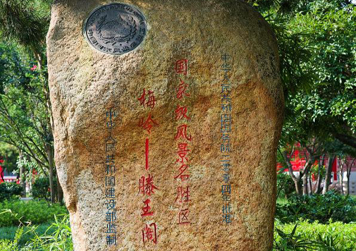

旅游服务
景区 票务
玩转滕王阁 门票45元起！！！
4月1日-10月31日（旺季） 08:00-18:30；11月1日-次年3月31日（淡季） 08:00-18:00；淡季停止售票时间17:15，旺季停止售票时间17:45。
普通票:45 45人民币 (1月1日-12月31日 周一-周日)
半票:1.2米至1.5米儿童、学生、南昌市民
免票:65岁以上老人、1.2米以下儿童
交通 指南
如何抵达！！
可乘坐公交车52路、26路、38路直达，在榕门路站下车，步行约3分钟到达滕王阁。
乘坐地铁一号线“万寿宫”站距滕王阁东门1.4公里，步行约13分钟；
地铁一号线“滕王阁”站距滕王阁南门1.5里，步行约14分钟到达。
走进景区
滕王阁南北亭
滕王阁的两侧还建有“压江”和“挹翠”两亭，长廊北端为四角重檐“挹翠”亭，长廊南端为四角重檐“压江”亭。从正面看，南北的两亭与主阁组成一个“山”字；而从飞机上俯瞰，滕王阁则有如一只平展两翅、意欲迎波西飞的巨大鲲鹏.
阁前广场
宽阔的阁前广场将滕王阁衬托得分外庄严雄伟，充分展现了当年王勃所赞誉的那种“上出重霄”，“下临无地”的气势。中央为大理石地面的先天八卦太极图，中部为太极阴阳鱼图案。

滕王阁风景名胜区标志石刻
滕王阁2004年被国务院批准为“梅岭一一滕王阁国家风景名胜区”的标志石刻